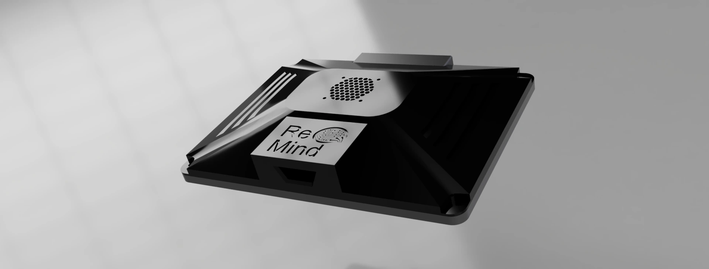
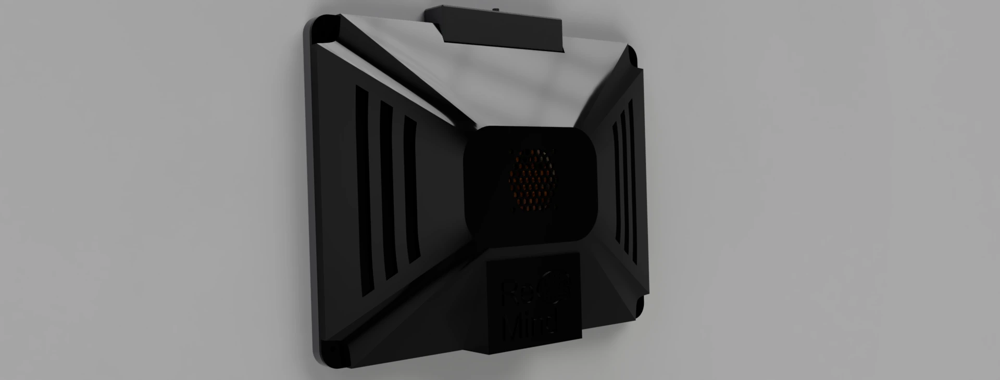

Neglect Reminder
Head movement and visual attention as a patient response framework

Neglect Reminder, showing the patient-facing display and webcam.


Enclosure detail and ReMind branding.


Rear view with cooling and ventilation.
Designing Around the Patient
Neglect Reminder was designed for people with neurological injuries who needed a way to respond without using their hands. The project focused on prompting patients to direct attention toward their affected side, using an interaction that required only head and eye movements.
The device plays a scheduled audio cue and presents a visual task. Head tracking provides the selection input, while identifying the requested symbol requires the patient to look at the display. This lets the system record a response without requiring a button press or touchscreen interaction from the patient.
I conducted patient and doctor interviews and collected data to understand the intended use. Those conversations helped frame the project around patients' movement restrictions and the information clinicians wanted to review.
My Contributions
As Software / Electrical Lead, I completed all of the programming and electrical work. That included the facial tracking implementation, the on-screen interaction, configurable settings, and the session logging and export workflow. I also conducted the patient and doctor interviews and handled data collection.
I had very little involvement in the mechanical design. The enclosure, mounting arrangement, and CAD shown in the presentation represent the team's mechanical work.
These two slides demonstrate my facial tracking implementation, from the patient interaction interface to the pose estimation and tuning controls. The original animated demos play directly below.
Read slide text
Facial Tracking Implementation
Overview
Head tracking is used as a remote selection method to prevent the user from having to physically interact with the device, while pupil attention is mandated by identification and selection of symbols.
Facial detection is handled offline using Google Mediapipe Blazeface, analyzing 6 tracking points to determine facial orientation
Interaction
Interactions can be scheduled by the physician at determined intervals, as well as exported to the selected medium.
Visualization
Export
Data is exported as a CSV, either overwriting existing data or appending the list. Drive data is not read, and files can only be added to the drive’s root with the name ReMindLog.csv
The interface is drawn using OpenCV with some custom functions to produce bevelled edges
Icons are parsed from a folder called “Images” in the project root. To add new icons you just add the image to that folder and rename it as an identifier, on startup the program will cache any images in that folder.
Icons are from https://game-icons.net/, but supports dynamic content scaling and chroma masking for backgrounds.
Read slide text
Facial Tracking Specifics
> A “facial plane” is generated using the tracking points and cv2’s solvePnP function (Perspective-n-Point). A Rodrigues Transformation is used to convert it to a 3x3 rotational matrix. This matrix represents the facial forward as a 3d-vector.
> By taking the dot product of this vector with the forward facing vector (0,0,1), you get a value from (-1)-(1). At -1, the user is pointing towards the camera, at 0, they are perpendicular. At -0.3 the side selection is determined.
> All relevant tuning parameters are exposed in the Debug/Settings menu. These settings are saved on “Apply” and loaded during startup.
> Values are interpolated over a set interval to account for tracking jitter which allows the device to operate in extremely poor lighting conditions. Outliers are excluded
cv2.solvePnP
cv2.Rodrigues—---------------(0, 0.5, -0.5) = A
np.dot(A,B)
—--------------
-0.4
A
A
B
Offline Facial Tracking
The system processes webcam images locally with MediaPipe BlazeFace. Six facial landmarks feed OpenCV's solvePnP function to estimate facial pose. A Rodrigues transformation converts the pose to a rotation matrix, and a dot product compares the resulting forward vector with a reference direction to determine a side selection.
To stabilize input, the implementation interpolates tracking values over a configurable interval and excludes outliers. A debug/settings menu exposes the tuning parameters, with settings saved on Apply and restored at startup.
The interface is drawn in OpenCV, including custom beveled controls. It loads task icons from an Images folder at startup and supports scaling and background masking. The interaction uses head orientation for selection; it does not directly measure pupil gaze.
See the implementation demos on slide 8 or the facial tracking demonstration on slide 9.
Session Data and Clinician Review
The program loads patient settings and previous session data, then waits for a scheduled interaction. When an alert triggers, it enables the camera, displays the task, and plays the audio cue. It logs time to target, time off target, and the session number and time.
These records export to ReMindLog.csv, either appending to an existing log or replacing it. The purpose was to give doctors data they could chart into performance statistics and review over time for signs of improvement.
The device was designed to operate offline and process camera images without storing them. Data transfer uses a manual USB export rather than a cloud connection.
Electrical and Hardware Integration
The standalone unit combines a Raspberry Pi 5 with an Inland C840 webcam and a Roadom 10-inch touchscreen. A Noctua NF-A4x10 5V PWM fan provides cooling, and a case-mounted USB-A port supports data export.
My electrical work supported the complete device, while the software brought the camera, display, audio prompts, and logging together into the patient interaction workflow. The team's 3D-printed enclosure and VESA-compatible mounting arrangement packaged the system for its intended hospital setting.
Hospital Testing
The final project was deployed at Barrow Neurological Institute for testing. It brought the response framework and data collection workflow into the environment for which they were designed.
The final presentation documents the prototype's limitations, including tracking at extreme patient angles or with significant facial asymmetry, the need for outlet power, and manual data export. It also identifies future work such as battery power, alternative mounting options, and a dedicated eye tracker.